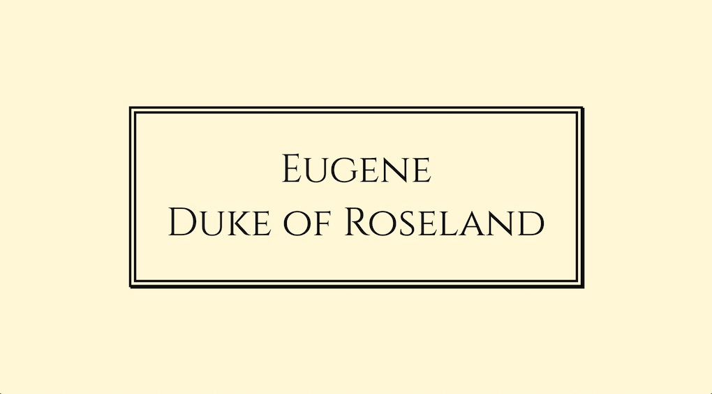
What's Your Type?
As soon as I saw the Cinzel font I thought it looked very
regal. Since I don't expect any time soon to be crowned king, I settled for the title of duke
(self-assigned of course). The Roseland is one of my favourite place ever in Cornwall. I also
used a
double border and a box shadow. Colour cornsilk, coincidently enough.
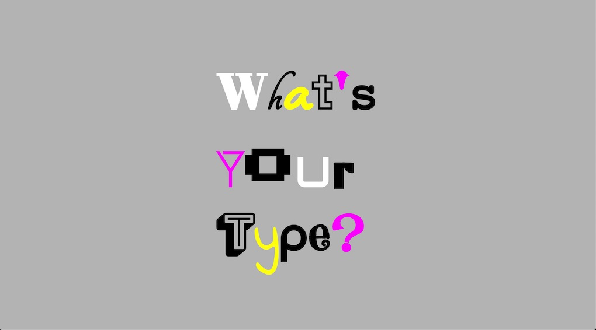
What's Your Type?
This is one of my favourite. I thought it would be easier to put together 15 different font families;
far from it. I got the idea from the "Just My Type" book. Click each letter to learn what font I used.
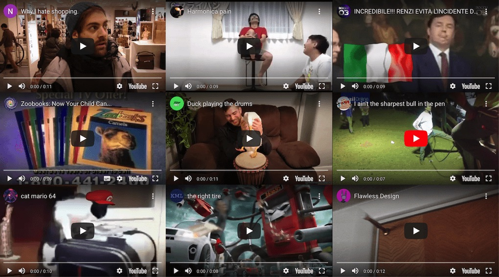
Over Entertainment
Do you ever feel like you've been over entertained? Social media, bill boards, tv, the internet,
music at any venue, radio in the car, etc. Or indeed you over entertain yourself by watching silly
YouTube videos? I used css grid to put the iframes in place and had to find videos about 10 seconds
long in order not to be too demanding of the data fetch. Enabling autoplay was key to delivering the
message.
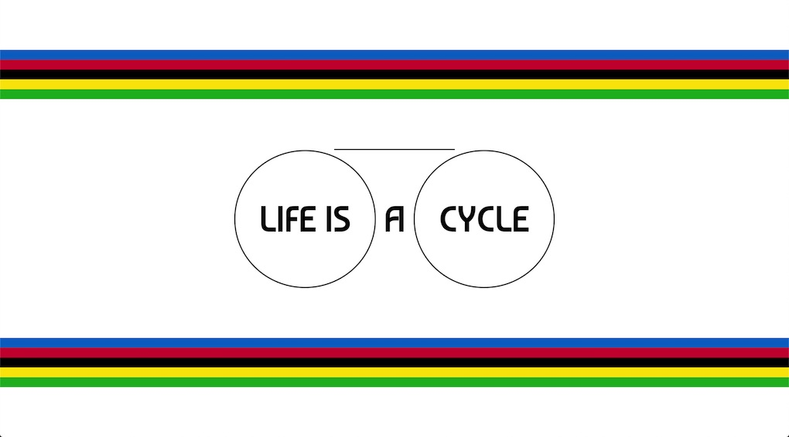
Life Is A Cycle
Whilst hearing about cyclist events on the news lately, I noticed this traditional colour palette.
I've
been meaning to make something with it for a while since it reminds me of my childhood for some
reasons. I then had to think about something that cycles and if it's true that we pretty much do the
same things every day and every other length of time, life is a cycle! It was also convenient to
apply a simple rotating animation, mimicking the spinning wheels of a bicycle. The bands of colours
live in flexbox rows as I prefer that to design assets. Font Baumans was round enough to fit the theme.
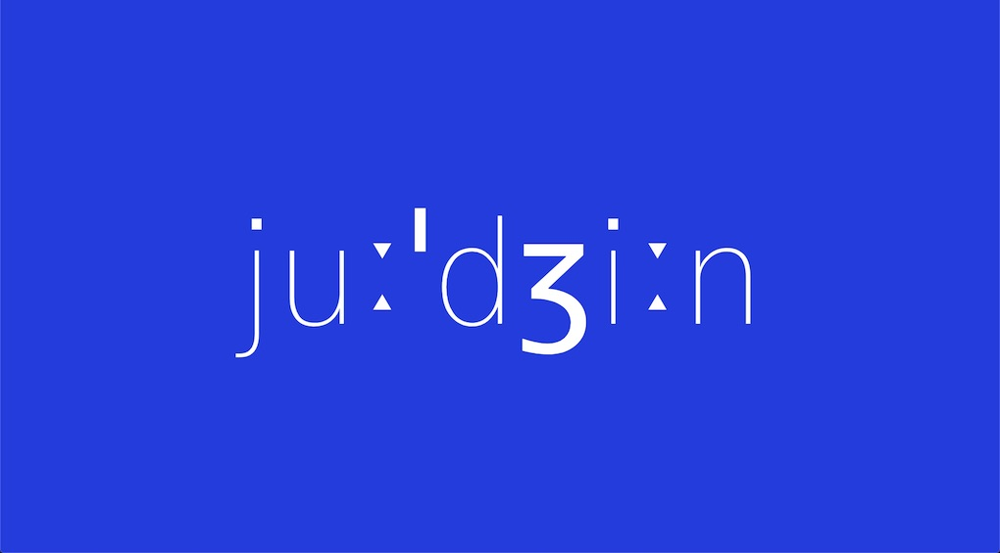
Judgin
I was intrigued by the way the phonetic transcription of my name looked. I liked
how it features two long suprasegmentals (the little triangles) and how the postalveolar resembles a
number 3. After I drafted it, I came across a blueprint and
thought the colour palette and thin font weight would go well together. Font Gothic A1.
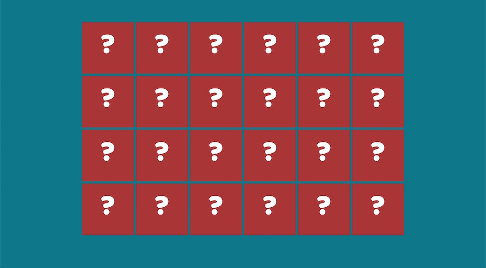
Donuts Memory Game
Memory card game inspired by Tania Rascia's version. Themed with donuts
from Unsplash with credits in each file name.
Font Baloo Bhai 2.
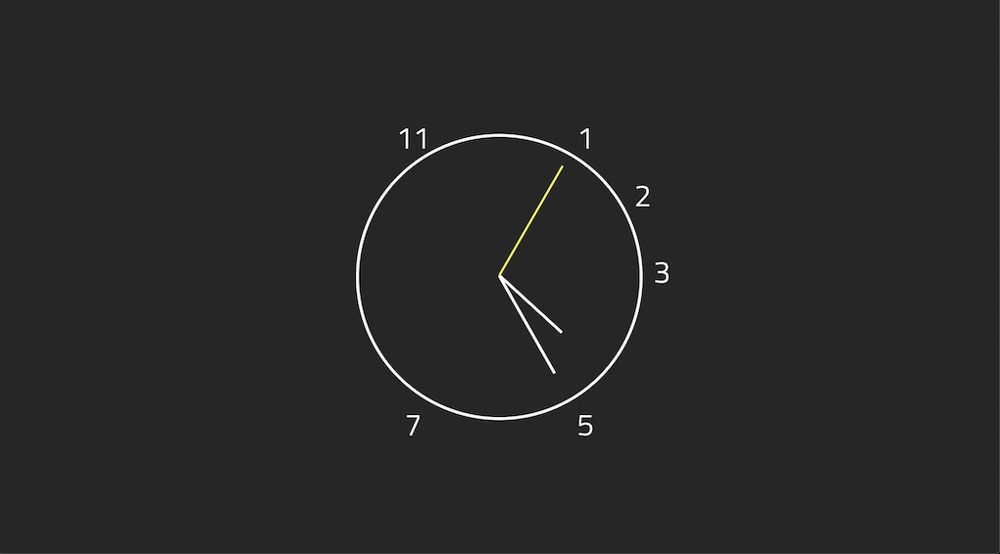
Prime Time
Here's an analog clock showing only prime numbers. The actual mechanism comes from the
Wes Bos Javascript 30
clock exercise. The numbers live within an underlying css grid. Font Titillium Web partly chosen because it's designed by some
compatriots at the Accademia di Belle Arti di Urbino, who happen to have an awesome
website.
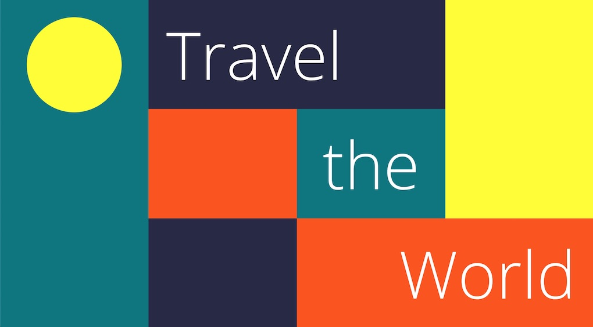
Travel the World
Inspired by the logo of the website for Visit Lisboa, the capital of Portugal. Font Open Sans.
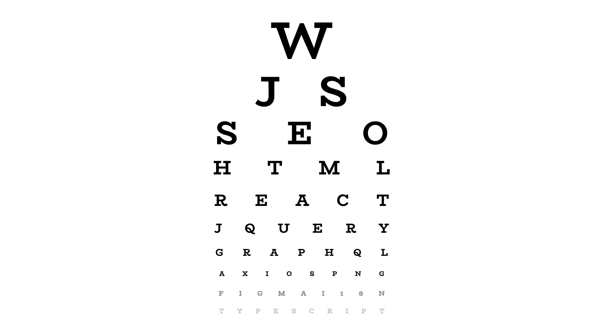
Web Eye Test
I'm sure someone else has come up with this idea before but I wanted to make my own version. It was a
little time consuming to get the proportions right. I also had to find a way to center align the
letters on each row as the extra letter spacing would add space to last letter as well. Font
BioRhyme.
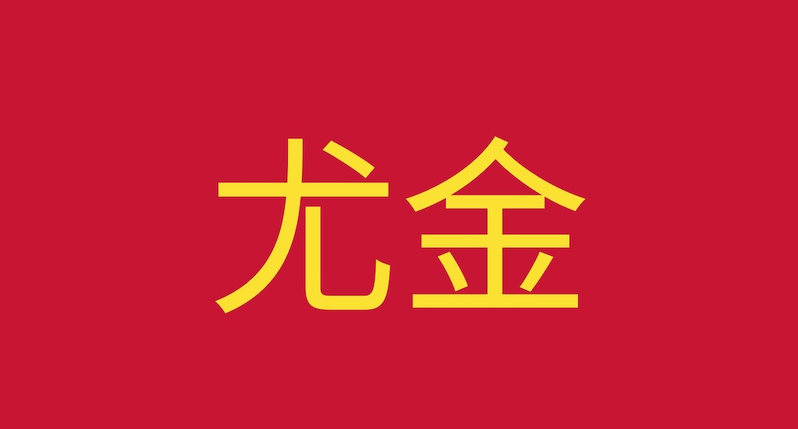
Chinese Eugene
Have you ever wondered how your name looks like in Chinese characters? and in the colours of the Chinese flag?
Here's mine, I just used Google translate. There were not many Google fonts for Chinese
though but I did find Noto Sans TC.
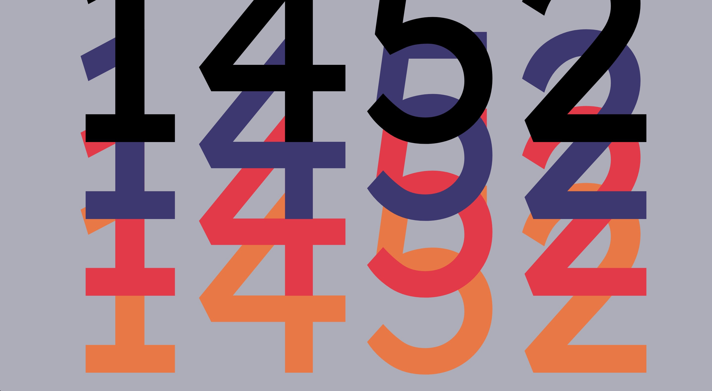
Numbers Stack
I was considering to learn to do card tricks, just for the sake of doing something cool
with my hands away from the screen. Whilst browsing a website I bumped into the 45s
Playing Cards. Then just by adding 1 and 2 at either end, I made up the year of birth of Leonardo da Vinci. Lexend Deca font family.
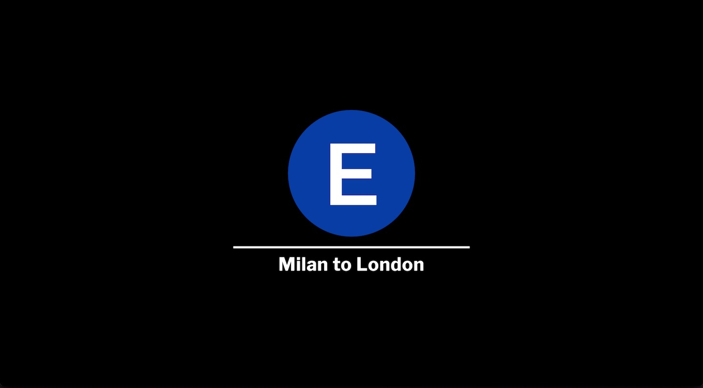
E Train
Inspired by an MTA E Train t-shirt I bought when I visited New
York City in 2004. Helvetica seems to be the font family used by the
MTA but I didn't have a licence for it so I opted for Montserrat on the train letter and Libre Franklin on the train route which I reckon they are close
enough. Lastly I got the actual blue colour from the MTA brand guide.
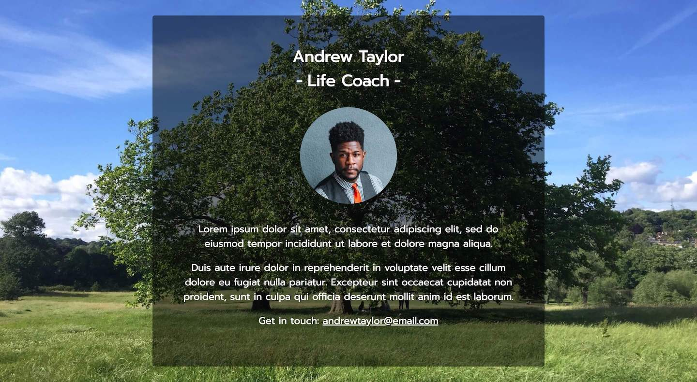
Andrew Taylor - Life Coach
A friend of mine asked me to put together a landing page for his new life coaching business, this is
its dummy version. I got the image of the bloke from Unsplash but I personally took the
background image on Hampstead Heath. Prompt font.
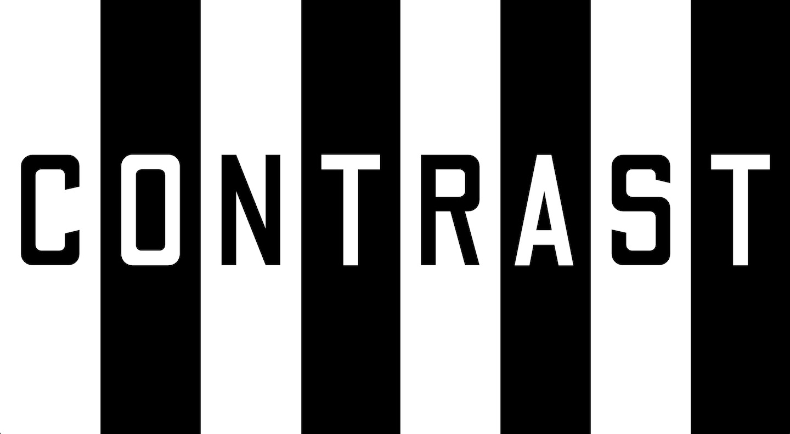
Contrast
Contrast theme with nested css flexbox rules and somehow responsive font size. Odibee Sans font family.
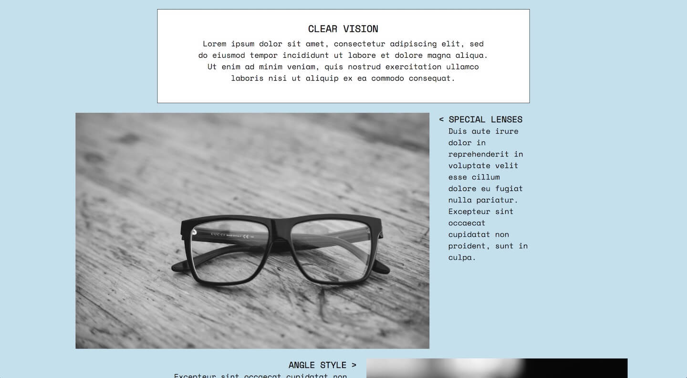
Clear Vision
Inspired by an Eyevan 7285 advert on an issue
of Monocle
magazine. Unusual implementation of the direction CSS property and oversized images. Photos sourced on Unsplash, see the
alt attribute for authoring. Space Mono font family.